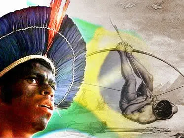
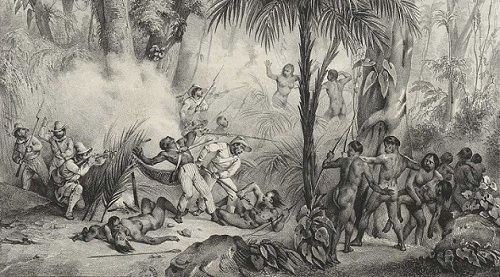

Os índios do Brasil sempre sofreram com o contato estabelecido com europeus e brasileiros, tanto pela dizimação física (genocídio) quanto pela violência cultural
HISTÓRIA
"Ao contrário do que sempre pensamos e do que os livros didáticos contavam, os portugueses não foram os primeiros povoadores do Brasil, pois havia habitantes nativos aqui antes da chegada dos europeus. Esses habitantes nativos e suas comunidades foram chamados pelos europeus de indígenas, fazendo referência às Índias, local ao qual os portugueses acreditavam ter chegado. Os índios, habitantes das comunidades indígenas, até o ano de 1500, momento dos primeiros contatos com os europeus, possuíam mil e quatrocentos povos, aproximando-se de um quantitativo de 3 a 5 milhões de indígenas. "
"As comunidades indígenas possuíam e ainda possuem características diferentes, começando pela língua: existiam e ainda existem vários troncos linguísticos, como o Tupi ou Macro-Tupi, Macro-Jê e Aruak. Essas comunidades também apresentavam e ainda apresentam diferentes práticas culturais, diferentes crenças e diversos ritos religiosos. Segue um breve levantamento de alguns povos indígenas que habitam ou já habitaram o território brasileiro: Araweté, Avá-Canoeiro, Bororo, Cinta larga, Guarani, Javaé, Kaingang, Karajá, Kayapó, Krahó, Munduruku, Pataxó, Tapirapé, Terena, Ticuna, Tupinambá, Xakriabá, Xavante, Xerente, Xingu, Yanomami, entre outros. "